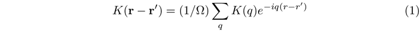
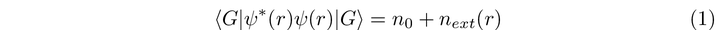
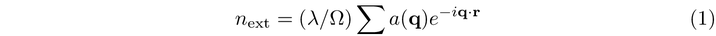
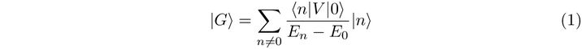
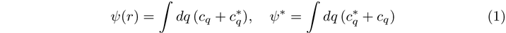
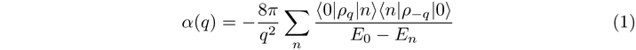
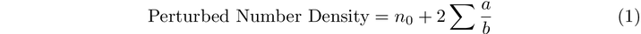

Density-Functional-Theory-Part-IV-c9a567f79e7548819e8959caa1e5a7d9
In the previous section, we looked at expanding out the functional of a gas of ‘almost-constant’ density.
This begs the question - what is the form of the kernel? Well, we can do a discrete, Fourier type decomposition. With this decomposition, we can write the kernel as follows

What is the kernel exactly? Well, it turns out that we can express the kernel in terms of actual, physical quantities. One of these quantities is called the electronic polarisability. In the paper, the authors consider an electron gas with some additional positive charge. Suppose that this additional positive charge was given by the small charge density surrounding it.
First Order Perturbation Theory
In the paper, equation 31 tries to expresses the electronic polarisability of a material in terms of a series expansion. Imagine we have a small extra charge density added on to a gas of constant electron density. To analyse the properly, we need to appeal to perturbation theory. Had we had no external potential, this would give a ground state denoted below by the state |0>. This gives rise to a perturbed ground state given by the expression
What is the number density given by this ground state? Well, the number density is the expectation of number operator. To get this, we contract this with the number operator and we get

The paper posits that the external part of this number density can be written as a Fourier expansion. In the discrete case, a Fourier expansion can be written in the general as a sum of different momentum values. In the sum below, the momentum values are given by the index q. In the coming paragraphs, we will try to derive an exact expression for the value a.

The good news is that perturbation theory gives us an expression for the ground state in terms of the eigenstates of the unperturbed Hamiltonian. These eigenstates are represented by the ket vectors |i>.

We can Fourier decompose creation and annihilation operators into a Fourier expansion.

What is the energy of this ground state? Well, suppose that the ground state is denoted with the state G. We can expand this out from the Fourier expansion

From this, we can derive the electric polarisability in terms of the eigenstates of the unperturbed potential.

Perturbation theory says that our number density of the ground state should look like the following

How does the Kernel Behave?
We are interested in the limiting properties of the polarisability as well as the kernel. The paper explores this idea. What are the limiting behaviours as the momentum variable q goes to infinity? In the next post, I’ll go through this in a bit more detail.

Suppose that the actual density is given by the the function in
First order perturbation theory